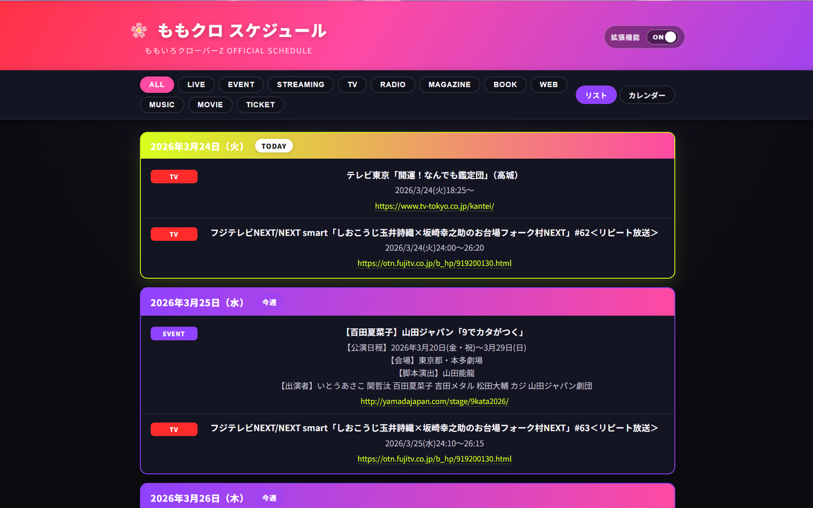
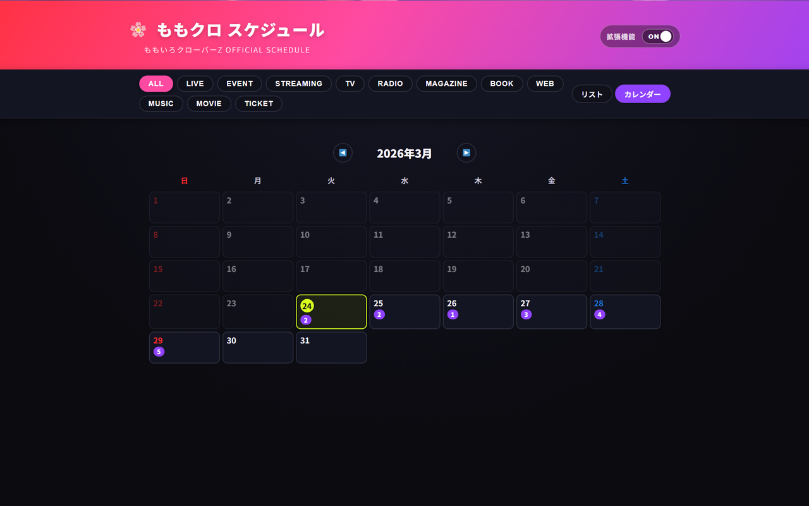
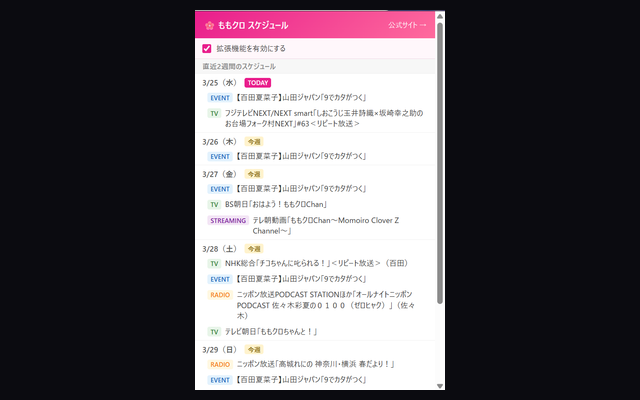

Chrome 拡張機能
ももいろクローバーZ 公式スケジュールページをより見やすい UI に置き換える Chrome 拡張機能です。
複数月を一括取得・日付グルーピング・カレンダービュー・リマインダー通知に対応。
GitHub で見る →スクリーンショット

リストビュー — 複数月を一括表示・日付グルーピング

カレンダービュー — 月ごとの全体像をひと目で把握

ポップアップ — アイコンクリックで直近スケジュールを確認